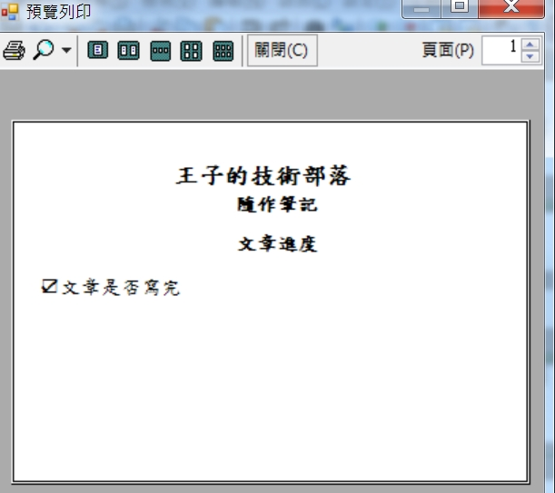

紀錄一下使用 C# 去寫 WINFORM 時用程式碼設計列印的內容
一些設定
1 | /// <summary> |
2 | /// 列印類別 |
3 | /// </summary> |
4 | internal class PrintPage |
5 | { |
6 | string pmk; |
7 | |
8 | public PrintPage() |
9 | { |
10 | pmk = ""; |
11 | } |
12 | |
13 | public PrintPage(string _pmkey) |
14 | { |
15 | pmk = _pmkey; |
16 | } |
17 | public void Print() |
18 | { |
19 | //列印文件 |
20 | PrintDocument pd = new PrintDocument(); |
21 | // 紙張大小 |
22 | PaperSize psz = new PaperSize(); |
23 | psz.RawKind = 0; |
24 | //一英吋=2.54cm=25.4mm |
25 | //A7 |
26 | psz.Width = 413;//176除於0.254 |
27 | psz.Height = 291;//125除於0.254 |
28 | pd.DefaultPageSettings.PaperSize = psz; |
29 | //要列印的畫面 |
30 | pd.PrintPage += new PrintPageEventHandler(PrintPage1); |
31 | //預覽對話框 |
32 | //PrintPreviewDialog PPD = new PrintPreviewDialog(); |
33 | //選擇印表機 |
34 | //DialogResult result = printDialog1.ShowDialog(); |
35 | //可以選擇從後方進紙 |
36 | string strInBox = "後方"; |
37 | string strInBox_E = "Rear"; |
38 | if (!pd.DefaultPageSettings.PaperSource.SourceName.Contains(strInBox)) |
39 | { |
40 | foreach (PaperSource item in pd.PrinterSettings.PaperSources) |
41 | { |
42 | if (item.SourceName.Contains(strInBox) || item.SourceName.Contains(strInBox_E)) |
43 | { |
44 | pd.DefaultPageSettings.PaperSource = item; |
45 | break; |
46 | } |
47 | } |
48 | } |
49 | //PPD.Document = pd; |
50 | //PPD.ShowDialog();//預覽列印 |
51 | //if (result == DialogResult.OK)//確定選擇的印表機 |
52 | //{ |
53 | //pd.Print(); |
54 | //} |
55 | //列印 |
56 | } |
刻要列印出來的內容
1 | public void PrintPage1(object sender, PrintPageEventArgs e) |
2 | { |
3 | //設定單位為公釐 |
4 | e.Graphics.PageUnit = GraphicsUnit.Millimeter; |
5 | string strPageHead = ""; |
6 | string strPageHead1 = ""; |
7 | string strPageHead2 = ""; |
8 | string strPrintText = ""; |
9 | Graphics PrintGraphics = e.Graphics; |
10 | SolidBrush PrintBrush = new SolidBrush(Color.Black); |
11 | Pen PrintPen = new Pen(Color.Black, 0.1F); |
12 | Font PrintFont = new Font("標楷體", 5.0F, FontStyle.Bold, GraphicsUnit.Millimeter); |
13 | //要刻這段文字的位置以及文字的方塊大小 |
14 | RectangleF drawRect = new RectangleF(1, 2, 100, 20); |
15 | //字的格式 |
16 | StringFormat DrawFormat1 = new StringFormat(); |
17 | DrawFormat1.Alignment = StringAlignment.Center; |
18 | DrawFormat1.LineAlignment = StringAlignment.Center; |
19 | strPageHead = "王子的技術部落"; |
20 | strPageHead = string.Format(strPageHead); |
21 | PrintGraphics.DrawString(strPageHead, PrintFont, PrintBrush, drawRect, DrawFormat1); |
22 | |
23 | PrintFont = new Font("標楷體", 4.0F, FontStyle.Bold, GraphicsUnit.Millimeter); |
24 | drawRect = new RectangleF(45, 15, 70, 50); |
25 | StringFormat DrawFormat = new StringFormat(); |
26 | DrawFormat.Alignment = StringAlignment.Near; |
27 | DrawFormat.LineAlignment = StringAlignment.Near; |
28 | strPageHead1 = "隨作筆記"; |
29 | strPageHead1 = string.Format(strPageHead1); |
30 | PrintGraphics.DrawString(strPageHead1, PrintFont, PrintBrush, drawRect, DrawFormat); |
31 | PrintFont = new Font("標楷體", 4.0F, FontStyle.Bold, GraphicsUnit.Millimeter); |
32 | drawRect = new RectangleF(45, 23, 100, 13); |
33 | StringFormat DrawFormat2 = new StringFormat(); |
34 | DrawFormat2.Alignment = StringAlignment.Near; |
35 | DrawFormat2.LineAlignment = StringAlignment.Near; |
36 | strPageHead2 = "文章進度"; |
37 | strPageHead2 = string.Format(strPageHead2); |
38 | PrintGraphics.DrawString(strPageHead2, PrintFont, PrintBrush, drawRect, DrawFormat); |
39 | PrintFont = new Font("新細明體", 4.0F, GraphicsUnit.Millimeter); |
40 | DrawFormat.LineAlignment = StringAlignment.Near; |
41 | //這邊可以再去延伸其他內容 |
42 | strPrintText = CreatPrintText(""); |
43 | strPrintText = string.Format(strPrintText); |
44 | PrintFont = new Font("標楷體", 4.0F, GraphicsUnit.Millimeter); |
45 | PrintGraphics.DrawString(strPrintText, PrintFont, PrintBrush, 5, 32, DrawFormat); |
46 | } |
47 | |
48 | private string CreatPrintText(string pmkey) |
49 | { |
50 | string printText = ""; |
51 | if (istrue) |
52 | { |
53 | printText = "☑文章是否寫完\n\n"; |
54 | } |
55 | else |
56 | { |
57 | printText = "☐文章是否寫完\n\n"; |
58 | } |
59 | return printText.Trim(); |
60 | } |
最後會長這個樣子

正所謂牽一髮而動全身
這個作法麻煩在如果有文字的位置可能要稍微移動，也許就要改很多地方